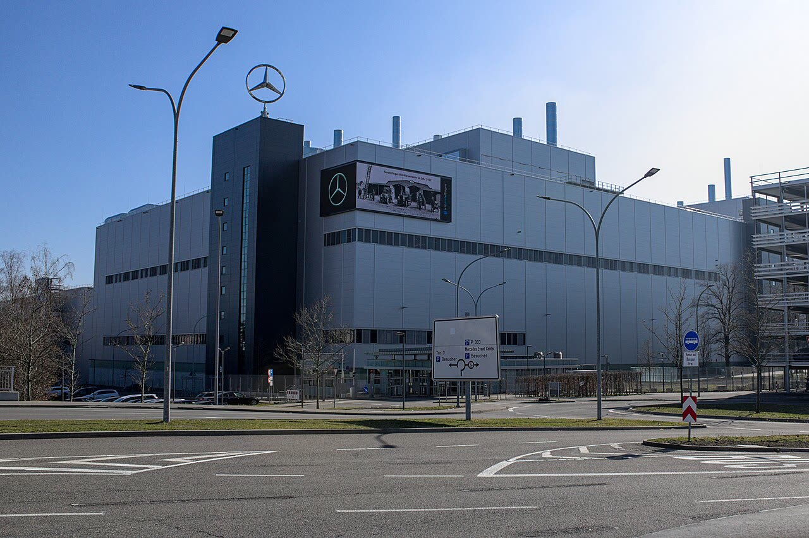

Mercedes ferma gli investimenti in Germania e valuta di chiudere stabilimenti
Il coro regge
Il racconto regge, ma i numeri sui costi sono solo di Mercedes: mancano i lavoratori e il conto per i fornitori italiani, che mandano in Germania il 20,2% dei componenti.
Redazione Contrappunto · aggiornato il 13.11.2026


Il 12 novembre 2026 Mercedes-Benz, il gruppo automobilistico di Stoccarda, ha fatto sapere ai dipendenti con un'intervista pubblicata sull'intranet aziendale (la rete interna) che il consiglio di gestione ha deciso di fermare tutti gli ulteriori investimenti negli stabilimenti tedeschi e di esaminare «in modo concreto» quali chiudere, se i costi non scendono. Il motivo dichiarato è che la trattativa con il consiglio di fabbrica e con il sindacato IG Metall sul taglio dei costi in Germania è ferma; l'azienda chiede tra l'altro di lavorare più ore a parità di stipendio. Non c'è un comunicato pubblico: il testo dell'intervista non è online e lo riportano le testate e le agenzie che l'hanno visto. Per l'Italia conta perché la Germania è il primo mercato estero dei componenti auto italiani: il 20,2% dell'export di settore nel 2025 (ANFIA, secondo Money.it).
Vedi di più: 5 parole spiegate, cosa si racconta
Cosa si raccontaIl racconto è questo: l'industria tedesca costa troppo e Mercedes, dopo mesi di trattative senza accordo, passa dalle parole ai fatti. Secondo l'azienda un'ora di lavoro in Germania può costare fino a cinque volte quella degli stabilimenti dell'Europa orientale (DW, Euronews). Il capo della produzione Michael Schiebe aveva già detto qualche settimana fa che, senza risparmi, due stabilimenti in Germania potrebbero chiudere: uno di assemblaggio e uno di componenti (DW, Euronews). Il 12 novembre, secondo Radiocor, il blocco vale fino a un accordo con i rappresentanti dei lavoratori sui costi. La DW aggiunge il resto del contesto: vendite in Cina in calo di circa il 19% nel 2025, domanda di auto elettriche più lenta del previsto, concorrenza cinese a prezzi più bassi, dazi americani costati secondo Mercedes circa un miliardo di euro di utili l'anno scorso. L'amministratore delegato Ola Källenius, a un evento della Süddeutsche Zeitung a Berlino, ha escluso «un compromesso al ribasso» e si è detto aperto a una proposta di IG Metall: deroghe temporanee ai contratti in cambio di investimenti e impegni vincolanti su sedi e posti di lavoro (Money.it). Le cifre sui costi sono dell'azienda: nessuna fonte indipendente le conferma. [Frankfurter Allgemeine Zeitung] [Deutsche Welle] [Euronews] [Il Sole 24 Ore Radiocor (su Borsa Italiana)]
- Intranet
- La rete interna dell'azienda, accessibile solo ai dipendenti: l'intervista di Schiebe e Seeger è stata pubblicata lì, non diffusa al pubblico (FAZ, Handelsblatt).
- Consiglio di fabbrica e IG Metall
- Il consiglio di fabbrica rappresenta i dipendenti dentro l'azienda; IG Metall è il sindacato tedesco dei metalmeccanici (Money.it). Con i due Mercedes tratta i tagli ai costi; IG Metall, a parte, sta trattando il contratto nazionale dei metalmeccanici (FAZ).
- Stabilimento di assemblaggio e di componenti
- Il primo monta le auto (Sindelfingen, Rastatt, Brema); il secondo, in inglese «powertrain», fabbrica i componenti del veicolo, per esempio motori e batterie (Euronews). Non è stato detto quali siano a rischio.
- ANFIA e componentistica
- ANFIA è l'associazione dell'industria automobilistica italiana. La componentistica sono le imprese che fanno pezzi per le case auto, anche tedesche: 2.110 imprese italiane analizzate, 53,5 miliardi di fatturato nel 2025, in calo del 3,0% (Money.it).
- Neutralità tecnologica
- Regole che fissano l'obiettivo (meno emissioni) senza imporre la tecnologia: ANFIA chiede all'Ue una neutralità «made in Europe» (Money.it). È anche la nostra linea.
- Il 12 novembre Mercedes ha comunicato ai dipendenti, con un'intervista interna, che il consiglio di gestione ferma ogni ulteriore investimento negli stabilimenti tedeschi e che valuta in concreto quali chiudere (FAZ, DW, Radiocor).
- Il motivo dichiarato è la trattativa ferma con consiglio di fabbrica e IG Metall sui costi: l'azienda vuole più ore di lavoro a parità di stipendio (FAZ). Nessuna chiusura è decisa e nessuno stabilimento è nominato.
- La Germania assorbe il 20,2% dell'export italiano di componenti auto; nessuna fonte ha ancora stimato l'effetto sui fornitori italiani (Money.it).
FAZ, DW e Radiocor raccontano la stessa cosa, presa dall'intervista interna di Schiebe e Seeger: costi troppo alti, trattativa ferma, stabilimenti a rischio. Il quadro di mercato lo dà Mercedes stessa: Radiocor cita Schiebe su dazi, domanda debole e concorrenza cinese, DW le cifre (Cina -19% nel 2025, circa un miliardo di dazi). Regge, ma i numeri sui costi sono solo dell'azienda: mancano la voce dei lavoratori, di IG Metall, e una stima per l'Italia, che manda in Germania il 20,2% dei suoi componenti. Per Handelsblatt lo stop è pressione sul tavolo: la leggiamo così. Meglio scambiare orari e investimenti, con meno tasse sul lavoro e regole Ue neutrali sulla tecnologia, senza lo stop ai motori termici del 2035. [1] [2] [4] [6]
La verifica punto per punto5 passaggi, 6 fonti
Qui sotto ogni cosa scritta sopra, una per una, con le fonti. Confermato: lo dice un documento originale o più fonti lette. Plausibile: lo riportano fonti serie, ma non abbiamo letto l'originale. Discordante: le fonti danno numeri diversi, e diciamo quali. Ipotesi e Opinione sono il nostro ragionamento, separato dai fatti.
Cosa ha detto davvero Mercedes
Il 12 novembre il capo della produzione Michael Schiebe ha detto, in un'intervista pubblicata sull'intranet, che il consiglio di gestione ha «deciso di fermare tutti gli ulteriori investimenti negli stabilimenti tedeschi» (FAZ). La direttrice del personale Britta Seeger ha spiegato che le trattative sulla «produttività» non vedono «ancora un corridoio di soluzione» e che, senza accordo, l'azienda sarà costretta a «passi molto duri» (FAZ). Mercedes sta esaminando quali stabilimenti tedeschi può ancora permettersi (DW) e, per Radiocor, Schiebe ha aggiunto che in caso di chiusure i prossimi modelli si farebbero solo all'estero. Il blocco vale fino a un'intesa sui costi (Radiocor). Una delle richieste è lavorare più ore a parità di stipendio (FAZ). Non è stato detto quali stabilimenti siano a rischio. DW parla di un «memo» visto da AFP, FAZ, Handelsblatt e Radiocor di un'intervista: stessa data, stesse parole.
Il conto dei costi e del mercato
Secondo DW, Mercedes ha vendite e profitti in calo da anni. La Cina, storicamente circa un terzo delle auto vendute dal gruppo, ha comprato meno: le vendite cinesi sono scese di circa il 19% nel 2025. La domanda di auto elettriche in Europa e Nord America è più lenta del previsto, la concorrenza cinese costa meno, e i dazi di Trump sono costati a Mercedes circa un miliardo di euro di profitti l'anno scorso. A fine ottobre Mercedes ha rivisto al ribasso il margine 2026 dopo un calo di quasi un terzo delle consegne in Cina nel terzo trimestre (Radiocor). Un'ora di lavoro in Germania costa fino a cinque volte quella dell'Est Europa: è una cifra di Mercedes, riportata da DW ed Euronews, non verificata da una fonte indipendente. L'11 novembre Källenius ha citato un indice di costi con la Germania a 100, gli Stati Uniti a circa 80, l'Ungheria a 30, la Romania a 20, la Cina tra 10 e 20 (Money.it).
Una leva nella trattativa
Lo stop agli investimenti è anche uno strumento per spingere la trattativa, non solo una decisione industriale già presa.
Ragionamento: Per Handelsblatt, con l'intervista il gruppo «alza la pressione» sulla parte dei lavoratori; il blocco vale fino a un'intesa sui costi (Radiocor); Seeger dice che le chiusure vogliono evitarle «a ogni costo» e le prepara solo se non c'è accordo (FAZ). Dopo mesi senza risultati, mettere sul tavolo investimenti e chiusure sposta il rapporto di forza. Fiducia media: abbiamo letto di Handelsblatt solo il testo visibile e non conosciamo il testo integrale dell'intervista.
Perché conta per l'Italia
La Germania assorbe il 20,2% dell'export italiano di componenti auto, davanti a Francia e Spagna (dati ANFIA sul commercio estero 2025, riportati da Teleborsa e Money.it). Nel 2025 le 2.110 imprese italiane della componentistica analizzate dall'Osservatorio ANFIA-Camera di commercio di Torino hanno fatturato circa 53,5 miliardi di euro (-3,0%), con circa 166.800 addetti (-2,3%). Nessuna fonte quantifica per ora l'impatto delle scelte di Mercedes e Volkswagen sui fornitori italiani; l'11 novembre anche Volkswagen ha rinunciato al progetto Gamechanger a Wolfsburg e ha messo sotto esame tutti gli investimenti (Money.it). ANFIA chiede all'Ue la neutralità tecnologica «made in Europe».
Il nostro punto
FAZ, DW e Radiocor raccontano la stessa cosa, presa dall'intervista interna di Schiebe e Seeger: costi troppo alti, trattativa ferma, stabilimenti a rischio. Il quadro di mercato lo dà Mercedes stessa: Radiocor cita Schiebe su dazi, domanda debole e concorrenza cinese, DW le cifre (Cina -19% nel 2025, circa un miliardo di dazi). Regge, ma i numeri sui costi sono solo dell'azienda: mancano la voce dei lavoratori, di IG Metall, e una stima per l'Italia, che manda in Germania il 20,2% dei suoi componenti. Per Handelsblatt lo stop è pressione sul tavolo: la leggiamo così. Meglio scambiare orari e investimenti, con meno tasse sul lavoro e regole Ue neutrali sulla tecnologia, senza lo stop ai motori termici del 2035.
Fonti6, tutte con il link
- Business-Liveticker: Mercedes stoppt alle neuen Investitionen in deutsche Standorte (12 novembre 2026) (Frankfurter Allgemeine Zeitung) · consultata il 13.11.2026
- Mercedes-Benz halts all further investment at German facilities (12 novembre 2026) (Deutsche Welle) · consultata il 13.11.2026
- Mercedes-Benz halts new investment in German plants, considers closures (12 novembre 2026) (Euronews) · consultata il 13.11.2026
- Mercedes: valuta chiusure stabilimenti in Germania e stop investimenti (12 novembre 2026) (Il Sole 24 Ore Radiocor (su Borsa Italiana)) · consultata il 13.11.2026
- Mercedes: Autohersteller stoppt alle Investitionen in Deutschland (12 novembre 2026, pagina dietro abbonamento: letto solo il testo visibile) (Handelsblatt) · consultata il 13.11.2026
- Volkswagen ferma il Gamechanger, Mercedes chiede più ore: la Germania assorbe il 20,2% dell'export italiano di componenti (12 novembre 2026) (Money.it) · consultata il 13.11.2026
Testo preparato con strumenti di intelligenza artificiale e pubblicato senza revisione umana. Come lavoriamo